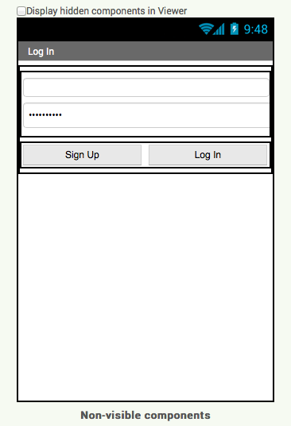

A demo version of my Huntr application, a job hunting application inspired by Tinder.
Using HTTPRequests through App Inventor's WEB component I was able to generate most of the basic functionality
Through these Web.url calls I can communicate to the Ruby-Sinatra server that I built to act as the restful api.
There were many challeneges in building this application. Ignoring the GUI's flakey nature my 3 biggest issue were that
So what functionality does this application demonstrate?
Sign up using an email and a password. It will check to make sure the email isn't take and that the passwords match. If everthing is valid, then a new user account will be made on the server and you'll be forwarded to the profile page
For future logins, you can use this page as long as you remember your email and password correctly. To test this try 'eva@eva.com' with eva or with 'max@max.com' with max as the password
On this page you can edit all of the data about a user from his name to his skills. You do this by filling out the forms and clicking the update button.
While I wasn't able to get the profile picture to persist on the server, it does however allow you to select it.
From the profile you can access the inbox and the matching. The Inbox was half built but without the ablility to generate new labels and buttons from code I decided to just disable it. The matching button takes you to the match maker
Here it will display a user and their general info and you can decide if you like them or not. Normally if you both showed interest in each other you'd get a message however thats disabled in this version.
A download of the .aia file can be found here
A copy of the .apk file can be found here
The source code to the server can be found here